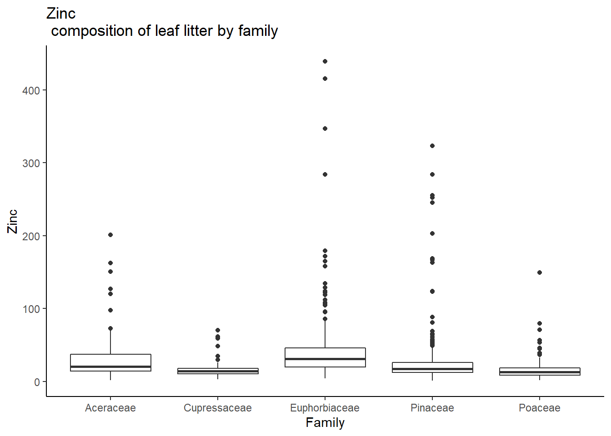

library(tidyverse)
library(data.table)
library(leaflet)
library(tidymodels)
library(kknn)
library(rpart)
library(baguette)
library(ranger)
library(MASS)
library(discrim)
library(rpart.plot)For this project I utilized some of the tidymodels functionality to run classification models on data from a series of ecological experiments carried out across North America during the 1990’s. The experiments studied the chemical/nutritional composition of leaf litter as it decayed over time and in different climate and substrate regimes.
First we need to load all of the necessary libraries for our analysis.
The data is stored in a number of different datasets and we need to read all of these in first and then combine them as necessary to be able to explore the data.
I’m using three individual datasets
taxon_class.csv
site_data.csv
nutrients.csv
taxa <- fread("taxon_class.csv") %>%
dplyr::select(`Taxonomic Code`, `Family`) %>%
mutate("species" = as.factor(`Taxonomic Code`),
"family" = as.factor(Family)) %>%
dplyr::select(-c(`Taxonomic Code`, Family))
site_data <- fread("site_data.csv") %>%
dplyr::select(-`STCODE`, `SITENAME`, `LATDEG`, `LATMIN`, `LONGDEG`, `LONGMIN`, `ELEV`, `TEMP`, `PRECIP`) %>%
mutate("lat" = LATDEG + LATMIN/60,
"long" = LONGDEG + LONGMIN/60) %>%
dplyr::select(-c(LATDEG, LATMIN, LONGDEG, LONGMIN))
nutrients <- fread("nutrients.csv") %>%
mutate("species" = as.factor(SPECIES),
"type" = as.factor(case_when(TYPE == "L" ~ "leaves",
TYPE == "W" | TYPE == "A" | TYPE == "B" ~ "wood",
TYPE == "R" ~ "roots",
TYPE == "M" ~ "soil")),
"site" = as.factor(SITE),
"K" = as.numeric(K)) %>%
dplyr::select(-c(STCODE, SPECIES, SITE, TYPE, FORMAT, REP, NIR_NUM, STARTDATE, LAB, S, V22, N, AL)) %>%
left_join(taxa, by = c("species")) %>%
filter(family != "") %>%
drop_na()We can map the locations of the experiment sites using the leaflet package.
leaflet() %>%
addTiles() %>%
addAwesomeMarkers(lng = -site_data$long, lat = site_data$lat,
label = site_data$SITENAME, clusterOptions = markerClusterOptions(freezeAtZoom = 16)) %>%
addMiniMap(position = "bottomleft", width = 75, height = 75) %>%
addProviderTiles("Esri.WorldImagery")Note that all of North America is included (extending towards the pole in Alaska) with additional sites in the Caribbean and Central America.
I’m interested in exploring the relationship between the taxonomic family the leaf litter was sourced from and it’s nutritional composition. However, since there are 18 different families represented in our cleaned data some with only a few observation, I’m going to focus on the top five familes with the most observations in our dataset. We’ll determine which those familes are in the code below.
length(unique(nutrients$family))[1] 18top_fams <- nutrients %>%
group_by(family) %>%
summarize(n())%>%
top_n(5) %>%
pull(family) %>%
as.character() %>%
as.factor()Selecting by n()Plotting
Now that we have the top five familes in our dataset, let’s examaine how the chemical composition of each varies across the different elements. Each of the elements which was analysed in the leaf litter is listed by it’s chemical abbreviation. We can look up the meaning of each of these abbreviations.
nutrients %>%
filter(family %in% top_fams) %>%
ggplot() +
geom_boxplot(aes(x = family, y = FE))+
theme_classic()+
xlab("Family")+
ylab("Iron")+
ggtitle("Iron composition of leaf litter by family")
nutrients %>%
filter(family %in% top_fams) %>%
ggplot() +
geom_boxplot(aes(x = family, y = CA))+
theme_classic()+
xlab("Family")+
ylab("Calcium")+
ggtitle("Calcium composition of leaf litter by family")nutrients %>%
filter(family %in% top_fams) %>%
ggplot() +
geom_boxplot(aes(x = family, y = B))+
theme_classic()+
xlab("Family")+
ylab("Boron")+
ggtitle("Boron composition of leaf litter by family")nutrients %>%
filter(family %in% top_fams) %>%
ggplot() +
geom_boxplot(aes(x = family, y = CU))+
theme_classic()+
xlab("Family")+
ylab("Copper")+
ggtitle("Copper composition of leaf litter by family")nutrients %>%
filter(family %in% top_fams) %>%
ggplot() +
geom_boxplot(aes(x = family, y = K))+
theme_classic()+
xlab("Family")+
ylab("Potassium")+
ggtitle("Potassium composition of leaf litter by family")
nutrients %>%
filter(family %in% top_fams) %>%
ggplot() +
geom_boxplot(aes(x = family, y = MG))+
theme_classic()+
xlab("Family")+
ylab("Magnesium")+
ggtitle("Magnesium composition of leaf litter by family")nutrients %>%
filter(family %in% top_fams) %>%
ggplot() +
geom_boxplot(aes(x = family, y = MN))+
theme_classic()+
xlab("Family")+
ylab("Manganese")+
ggtitle("Manganese composition of leaf litter by family")nutrients %>%
filter(family %in% top_fams) %>%
ggplot() +
geom_boxplot(aes(x = family, y = P))+
theme_classic()+
xlab("Family")+
ylab("Phosphorus")+
ggtitle("Phosphorus
composition of leaf litter by family")nutrients %>%
filter(family %in% top_fams) %>%
ggplot() +
geom_boxplot(aes(x = family, y = ZN))+
theme_classic()+
xlab("Family")+
ylab("Zinc")+
ggtitle("Zinc
composition of leaf litter by family")
Examaining the plots a few observations strike me. First, note how strongly right-skewed the distribution of chemical composition within each family is for most of the chemicals. Almost all of the boxplots feature long right tails of outliers. Second notice that some of the chemicals seem to have different concentrations depending on family. Looking at the plot for calcium, note how Euphorbiaceae (the spurge family) has a mean that is substantially higher (arguably) than the means for any of the other familes except Pinaceae. A similar observation can be made about the Manganese composition in the Aceraceae (maple family) which appears to have a substantially higher mean manganese composition than any of the other familes. Suffice it to say, there appears to be differentiation in leaf litter composition based on the source family. Let’s try building some classification models to see if we can take advantage of this differentiation to predict the source family of a given sample of leaf litter based on it’s chemical composition.
Classification Models using tidymodels
We are going to try to predict the family which the leaf litter came from based on the chemical composition of the leaf litter. To do this I’m going to use tidymodels, which has a stream-lined pipeline approach to fitting models which will allow us to test several different kinds of classification models.
K-nearest Neighbors
We’ll using the classic K-nearest neighbors model. To fit a model in the tidyverse we specify the “recipe” which in our simple case is just the response and predictors and the data source. We then specify the model, including the engine (the package for the model) and the mode (classification in our case). We are interested in predicative accuracy, so we’ll use cross-validation to estimate the out-of-sample predicative accuracy.
set.seed(452)
top_fam_nutrients <- nutrients %>%
filter(family %in% top_fams) %>%
mutate("family" = as.character(family))
family_recipe <- recipe(family ~ B + CA + CU + FE + K + MG + MN + P + ZN, data = top_fam_nutrients)
knn_mod <- nearest_neighbor() %>%
set_engine("kknn") %>%
set_mode("classification")
family_workflow_knn <- workflow() %>%
add_recipe(family_recipe) %>%
add_model(knn_mod)
family_cvs <- vfold_cv(top_fam_nutrients, v = 10)
family_workflow_knn %>% fit_resamples(family_cvs) %>% collect_metrics()# A tibble: 2 x 6
.metric .estimator mean n std_err .config
<chr> <chr> <dbl> <int> <dbl> <chr>
1 accuracy multiclass 0.689 10 0.0110 Preprocessor1_Model1
2 roc_auc hand_till 0.860 10 0.0119 Preprocessor1_Model1Our k-nearest neighbor’s model was able to successfully predict which of the five top families a given leaf litter sample came from about 69% of the time. Not terrible accuracy for a multiclass problem (as opposed to a binary classification problem), but still not very good. Let’s see if we can do better with some other kind of model.
Trees
Decision Trees
We’ll try a decision tree next. The process is very similar, and since we already specified a recipe when fitting our k-nearest neighbors model we’ll just reuse that recipe here. Again, we’ll cross-validate to find our estimated out-of-sample predictive accuracy.
set.seed(214)
dt_mod <- decision_tree() %>%
set_engine("rpart") %>%
set_mode("classification")
family_workflow_dt <- workflow() %>%
add_recipe(family_recipe) %>%
add_model(dt_mod)
family_workflow_dt %>% fit_resamples(family_cvs) %>% collect_metrics()# A tibble: 2 x 6
.metric .estimator mean n std_err .config
<chr> <chr> <dbl> <int> <dbl> <chr>
1 accuracy multiclass 0.622 10 0.0152 Preprocessor1_Model1
2 roc_auc hand_till 0.799 10 0.0106 Preprocessor1_Model1Our decision tree actually fared worse than the k-nearest neighbor’s model, with an estimated predictive accuracy of about 62%.
We can also plot our decision tree, which can show us which are the most important variables in classifying the family of the sample.
fitted_family_tree <- fit(family_workflow_dt, data = top_fam_nutrients) %>% extract_fit_parsnip()
rpart.plot(fitted_family_tree$fit, roundint = FALSE)Bagged Trees
Now let’s try a bagged tree. This bootstraps our data and then builds many different treees based on those different bootstraped samples and uses the overall prediction from all the trees to classify the data.
set.seed(615)
bag_tree_mod <- bag_tree() %>%
set_engine("rpart") %>%
set_mode("classification")
family_workflow_bgt <- workflow() %>%
add_recipe(family_recipe) %>%
add_model(bag_tree_mod)
family_workflow_bgt %>% fit_resamples(family_cvs) %>% collect_metrics()# A tibble: 2 x 6
.metric .estimator mean n std_err .config
<chr> <chr> <dbl> <int> <dbl> <chr>
1 accuracy multiclass 0.732 10 0.00887 Preprocessor1_Model1
2 roc_auc hand_till 0.899 10 0.00967 Preprocessor1_Model1We see improvement over the decision tree and even our k-nearest neighbor’s model, with an estimated out-of-sample predicative accuracy of 73%.
Random Forest
Let’s try a random forest next. A random forest also is built using bootstrapped samples from the orginal sample, like a bagged tree, but it builds different trees using different subsets of the possible predictors.
set.seed(943)
rf_mod <- rand_forest() %>%
set_engine("ranger") %>%
set_mode("classification")
family_workflow_rf <- workflow() %>%
add_recipe(family_recipe) %>%
add_model(rf_mod)
family_workflow_rf %>% fit_resamples(family_cvs) %>% collect_metrics()# A tibble: 2 x 6
.metric .estimator mean n std_err .config
<chr> <chr> <dbl> <int> <dbl> <chr>
1 accuracy multiclass 0.775 10 0.00850 Preprocessor1_Model1
2 roc_auc hand_till 0.928 10 0.00728 Preprocessor1_Model1Our random forest model has the best predictive accuracy of any of the models we’ve tested so far with an estimated out-of-sample predicative accuracy of 77.5%.
Two final methods we can try are Linear Discriminant Analysis and Quadratic Discriminant Analysis.
Linear Discriminant Analysis
I’m less familiar with how either LDA or QDA works so I’ll simply report the results.
set.seed(121)
lda_mod <- discrim_linear() %>%
set_engine("MASS") %>%
set_mode("classification")
family_workflow_lda <- workflow() %>%
add_recipe(family_recipe) %>%
add_model(lda_mod)
family_workflow_lda %>% fit_resamples(family_cvs) %>% collect_metrics()# A tibble: 2 x 6
.metric .estimator mean n std_err .config
<chr> <chr> <dbl> <int> <dbl> <chr>
1 accuracy multiclass 0.506 10 0.0177 Preprocessor1_Model1
2 roc_auc hand_till 0.774 10 0.0110 Preprocessor1_Model1Our worst model so far, our LDA model has an estimated out-of-sample predicative accuracy of just over 50%.
Quadratic Discriminant Analysis
set.seed(333)
qda_mod <- discrim_quad() %>%
set_engine('MASS') %>%
set_mode('classification')
family_workflow_qda <- workflow() %>%
add_recipe(family_recipe) %>%
add_model(qda_mod)
family_workflow_qda %>% fit_resamples(family_cvs) %>% collect_metrics()# A tibble: 2 x 6
.metric .estimator mean n std_err .config
<chr> <chr> <dbl> <int> <dbl> <chr>
1 accuracy multiclass 0.452 10 0.0141 Preprocessor1_Model1
2 roc_auc hand_till 0.729 10 0.0136 Preprocessor1_Model1Remarkably exceeding the LDA in lack of accuracy, our LDA model has an estimated out-of-sample predicative accuracy of 45%.
Possible confounding
Not knowing the exact experimental design, I want to check whether all families were tested at all sites, or whether perhaps families were tested primarily at the sites where the are native. I was not able to determine whether the leaf litter being studied was the natural leaf litter at each site or whether the leaf litter from each site was tested at all of the other sites. While I don’t have information on the native range for all of the species in the study, we can check whether the top families were tested at all of the sites or not.
top_fam_nutrients %>%
group_by(family) %>%
summarize(length(unique(site)))# A tibble: 5 x 2
family `length(unique(site))`
<chr> <int>
1 Aceraceae 28
2 Cupressaceae 28
3 Euphorbiaceae 28
4 Pinaceae 28
5 Poaceae 28missing_site <- as.character(unique(nutrients$site)[!(unique(nutrients$site) %in% unique(top_fam_nutrients$site))][1])
site_data %>%
filter(SITE == missing_site) %>%
pull(SITENAME)character(0)This is an unexpected result… it appears that the site metadata file does not contain an entry for the site which did not have any of the top five families. I investigated this a bit more and concluded that it was legitimate site, but could not determine why it is missing from the metadata file.
Another way to approach this same question is to examine a species that I am familiar with and see whether it was tested at experimental sites outside of it’s natural range. I’ll choose Pseudotsuga menziesii, the Douglas Fir, a coniferous tree found in western North America. Let’s see which sites tested Douglas Fir litter, if any of those sites were outside of the native range of Douglas Fir we can conclude that the experimental design included testing litter outside of it’s source site.
First we need to determine the species code of Douglas Fir
taxa_species <- fread("taxon_class.csv") %>%
dplyr::select(`Taxonomic Code`, "Species") %>%
filter(Species == "Pseudotsuga menziesii") %>%
dplyr::select(-Species) %>%
mutate("species" = as.factor(`Taxonomic Code`)) %>%
pull(species) %>%
as.character()
taxa_species[1] "PSME"Now we can see which sites had Douglas Fir litter tested at them. We’ll map them.
douglas_fir_site_names <- nutrients %>%
filter(species == taxa_species) %>%
group_by(site) %>%
summarize(n()) %>%
pull(site) %>%
as.character()
douglas_fir_sites <- site_data %>%
filter(SITE %in% douglas_fir_site_names)leaflet() %>%
addTiles() %>%
addAwesomeMarkers(lng = -douglas_fir_sites$long, lat = douglas_fir_sites$lat,
label = douglas_fir_sites$SITENAME, clusterOptions = markerClusterOptions(freezeAtZoom = 16)) %>%
addMiniMap(position = "bottomleft", width = 75, height = 75) %>%
addProviderTiles("Esri.WorldImagery")The results are quite surprising. Douglas Fir was not tested at all of the sites, but only at a few sites on the Atlantic Coast. Douglas Fir is not native to the Atlantic Coast, so I do not have an explanation for why these are the sites where it was tested.
Conclusion
As we’ve seen, tidymodels provides an easy and streamlined method to fit machine-learning models in R. In fact, we’ve barely scratched the surface since we didn’t consider tuning any of the parameters of our models using a grid search, or adding steps to our recipes to choose two possible complexities we could have added to our analysis.
And with regard to the data, there is so much more we could have explored. I did not take into consideration how long the leaf litter had been decaying (although this was part of the experiment), and I think that delving deeper in the experimental design and determining exactly how the study was setup and conducted would help us think about the questions I raised toward the end as to whether the observations for each plant were taken at all sites or at a small subset (which seems like it would be a confounding factor).